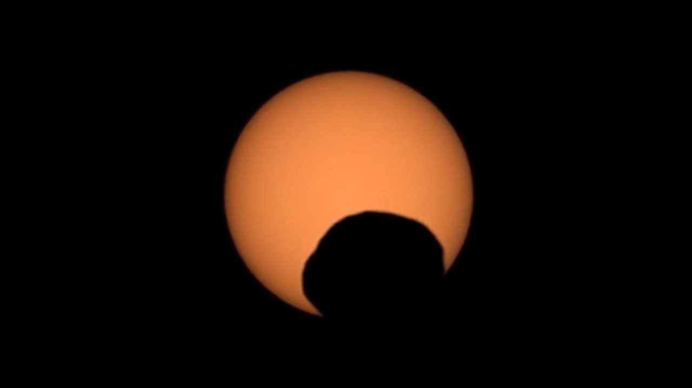

MISSION IMAGE
Mastcam-Z Phobos transit • NASA/JPL-Caltech/ASU/MSSS
Perseverance
NASA / JPL • Mars
● ACTIVE
Location
Beyond Jezero rim
Distance driven
42.2+ km
Mission role
Astrobiology + samples
Latest image week
Week 284
AI read: Mars is interesting here because the rover is reading ancient river and lake rocks while building a sample set that could become the strongest test yet for past life on Mars.